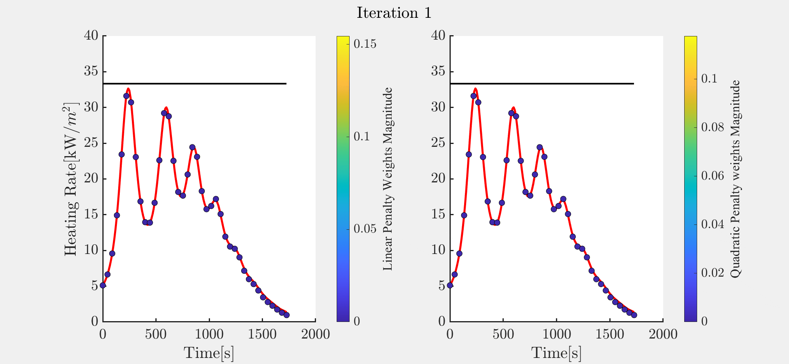
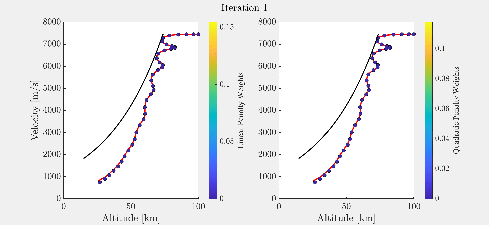
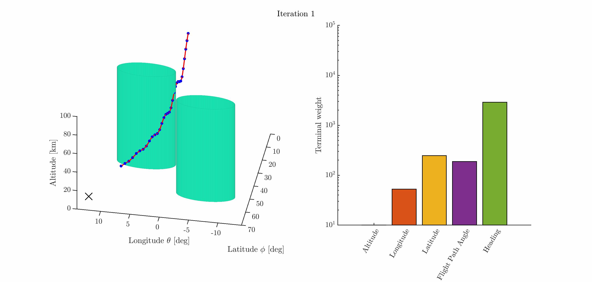

This paper presents auto-tuned primal-dual successive convexification (Auto-SCvx), an algorithm designed to reliably achieve dynamically-feasible trajectory solutions for constrained hypersonic reentry optimal control problems across a large mission parameter space. In Auto-SCvx, we solve a sequence of convex subproblems until convergence to a solution of the original nonconvex problem. This method iteratively optimizes dual variables in closed-form in order to update the penalty hyperparameters used in the primal variable updates. A benefit of this method is that it is auto-tuning, and requires no hand-tuning by the user with respect to the constraint penalty weights. Several example hypersonic reentry problems are posed and solved using this method, and comparative studies are conducted against current methods. In these numerical studies, our algorithm demonstrates equal and often improved performance while not requiring hand-tuning of penalty hyperparameters.
This page presents visualizations of how our automated penalty weight tuning mechanism evolves throughout the SCP-based trajectory optimization process. These visualizations highlight the adaptive nature of our penalty weight update scheme and its impact on trajectory convergence. In both examples, this represents a nonlinear propagation of the optimal control solution, used to verify dynamic feasibility.
Heat Rate Analysis: The first image displays the evolution of both quadratic and linear penalty weights across algorithm iterations for each constraint at each point in time, with colors at each node indicating their respective values. The second image presents the same penalty weight evolution as the first image but in altitude-velocity space, providing an alternative perspective on constraint handling.
 Terminal Weights Analysis: This displays the evolution of quadratic penalty weights for the terminal condition constraint (right) and the corresponding trajectory approaching the terminal condition (left).
